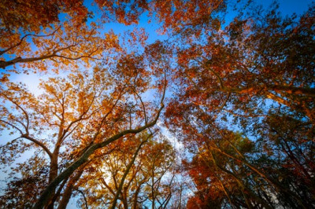

Fall Foliage Festival
by Leslie Leaf

A walk through the splendid fall leaves of Preston will certainly bring some pink to your cheeks! Take time this weekend to
explore the great outdoors with friends and family. Be sure to stop by the Preston Farmers Market. In December the market will
switch to a Christmas market featuring wares from vendors state-wide.